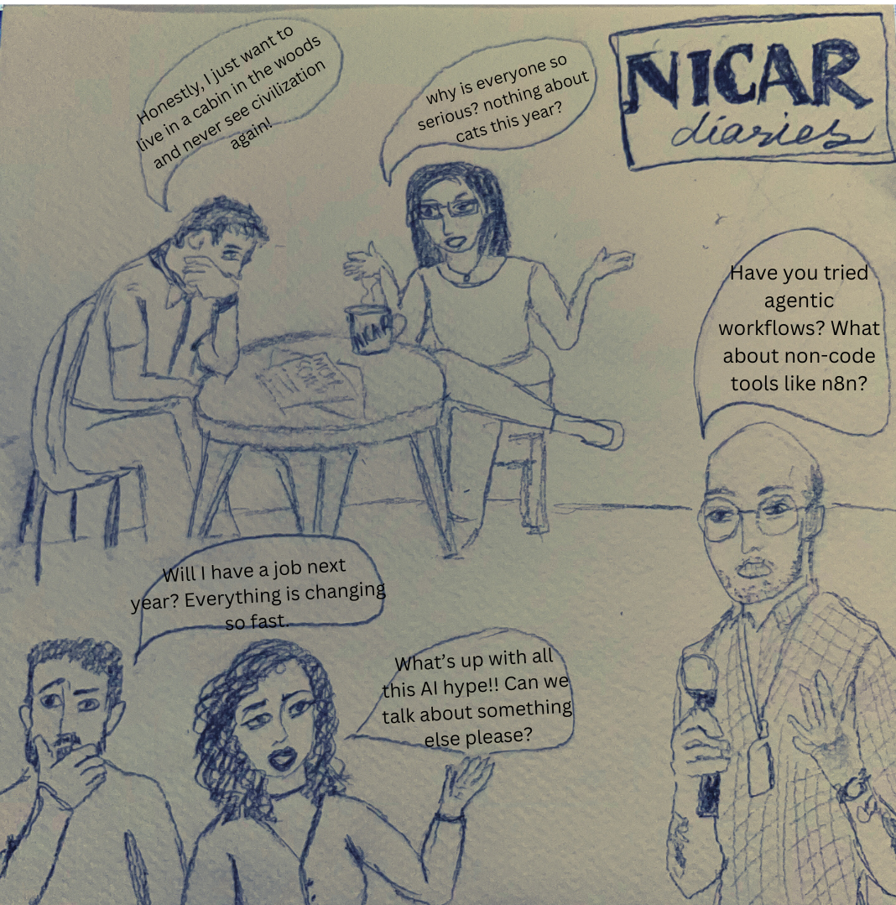

Fifteen years of NICAR lightning talks
Over the years, data journalists have had a fluctuating sense of humor

Over the years, data journalists have had a fluctuating sense of humor
The Investigative Reporters and Editors (IRE) have been hosting NICAR (National Institute for Computer-Assisted Reporting) since it was founded in 1989. In 2010, they introduced Lightning Talks to the conference. These are 5-minute talks delivered by newcomers and veterans, sharing insights from their encounters with data journalism. As we inch closer to the 16th iteration of the conference, here is a data recap.
The talks are put up for an anonymous vote. The top 10 talks with most number of votes are then announced.
It just so happened, that majority of the talks with the highest number of votes had been pitched by men. Over the years,
data journalists have heard from 99 men and 63 women.
Interestingly, in 2012, not a single woman presented a lightning talk.
From APIs to Natural Language Processing Models, and from OSINT to history lessons. Data journalists have employed innovative storytelling techniques to convey their work. Here is a breakdown of some of the overarching themes.
Over these 16 years, the lightning talks fall roughly under 15 major themes.
The top three themes across all years have been: Data Visualization, Satire/Humor, and Mapping or GIS! At least 20 hilarious talks have been delivered, and more than 22 on data visualization. There has also been a significant discussion on FOIAs. Is it because we are not really learning how to write them or is it because it is hard for us to accept the rejection?
Each circle represents one lightning talk. The color shows its theme. Over 16 years, 161 talks were delivered across 15 broad themes.
Programming & Tools dominated the early years. In 2011 alone, 7 out of 10 talks were about code, APIs, or software.
By the mid-2010s, the conversation shifted. Data Habits and Data Visualization rose as journalists focused on process and presentation.
From 2018 onward, Newsroom Culture & Career surged, reflecting growing concern about workplace issues, diversity, and career sustainability.
FOIA & Public Records and Storytime have become staples of recent years, with journalists sharing hard-won lessons and personal narratives.
Now let's see how each theme is distributed across all 16 years.